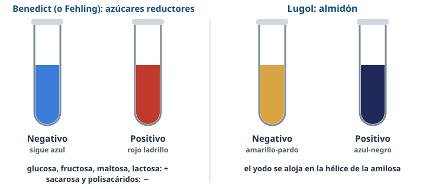

Bloque A · Prácticas · Nuevo 26-27
Identificar
biomoléculas
Cuatro reactivos y una forma de pensar: del color del tubo a la molécula.
Usa ← → o el espacio para avanzar · F para pantalla completa
Directrices · A.3.5¿Qué nos van a pedir?
Directrices 26-27Interpretar resultados de Benedict, Lugol, Biuret y Sudán y deducir qué hay en una muestra, sin fundamento químico ni procedimientos.
Leer
¿Qué color ha salido en cada tubo?
Relacionar
¿Qué propiedad indica ese color?
Justificar
Cada identificación, con su dato.
EnsayosLos cuatro colores
EnsayosLas trampas
- Sacarosa: dulce pero Benedict negativo (no reductora). Hidrolizada → positivo.
- Lugol detecta almidón, no glucosa.
- Clara cocida sigue dando Biuret violeta (enlaces peptídicos intactos).
- Un aminoácido suelto da Biuret negativo.

EstrategiaÁrbol de decisión
Diseño experimentalControles y variables
Controles
Positivo: muestra que sabemos que da + (glucosa para Benedict).
Negativo: agua destilada.
Variables
Independiente: lo que cambio (temperatura…).
Dependiente: lo que observo (color).
Controladas: lo que mantengo igual.
Problema¿Sabrías resolverlo?
🥔 Patata + saliva a 37 ºC → Fehling rojo. Patata + agua → azul. Patata + saliva hervida → azul. (PAU 2024)
La amilasa hidroliza el almidón y libera azúcares reductores. Sin saliva no hay enzima; hervida, se desnaturaliza.
🥛 Una muestra da Benedict +, Biuret + y Sudán +. ¿Leche, zumo o aceite?
Leche entera: lactosa (reductora), proteínas y grasa.
¡A practicar!
Del color
a la molécula
Repasa los apuntes y practica en el Laboratorio competencial de BioCelia.